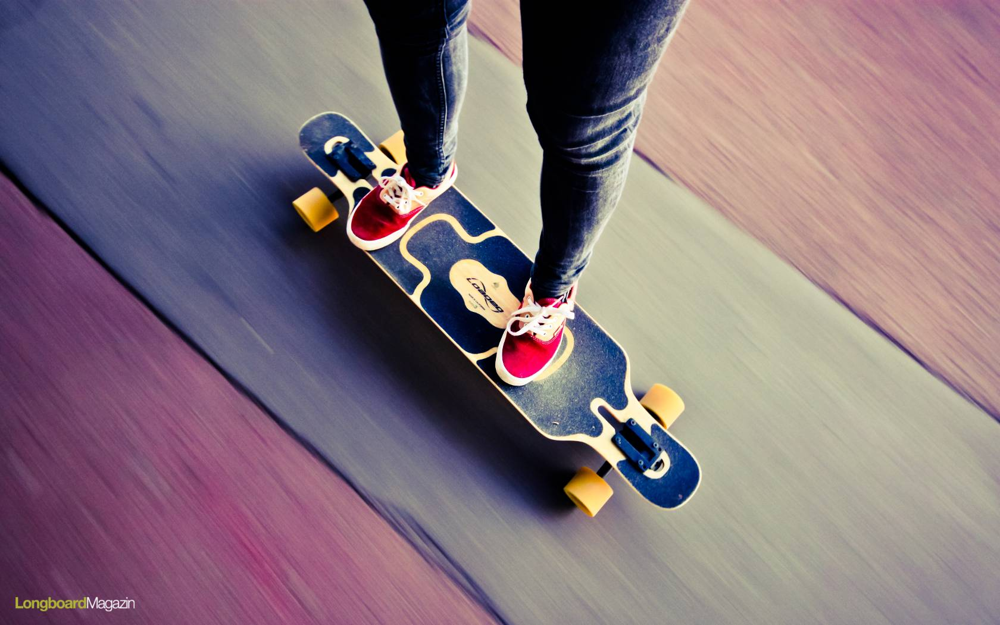
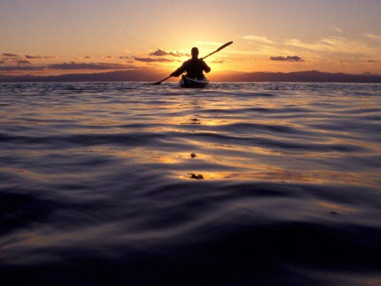
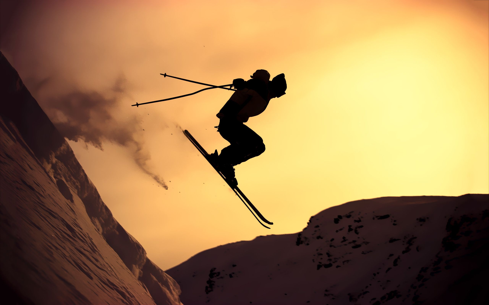
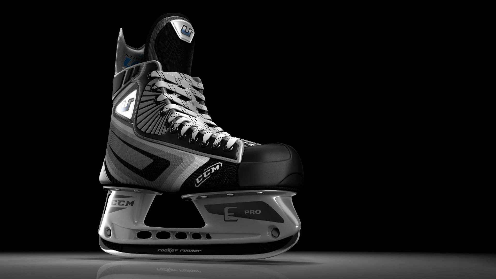
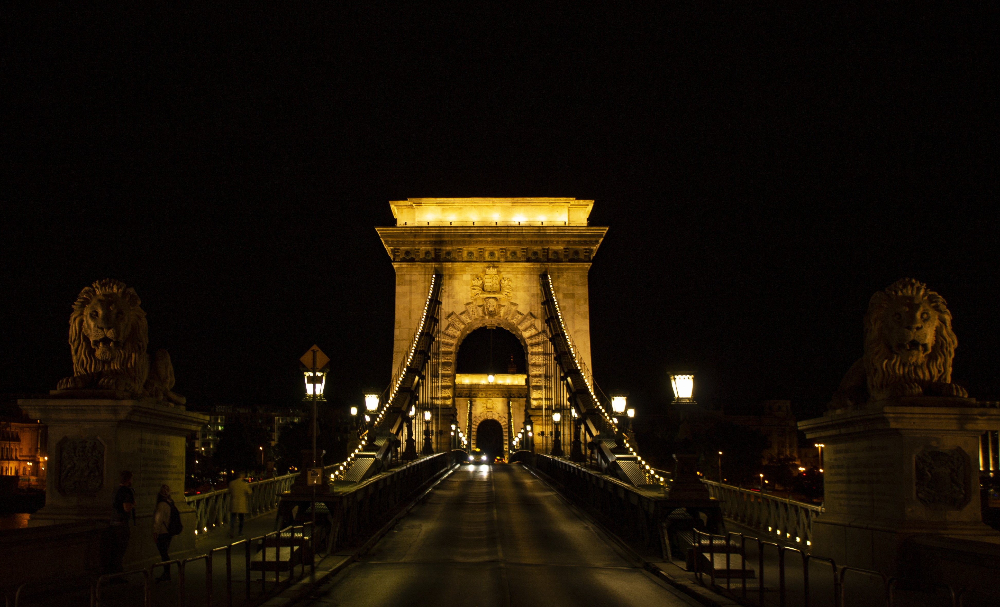
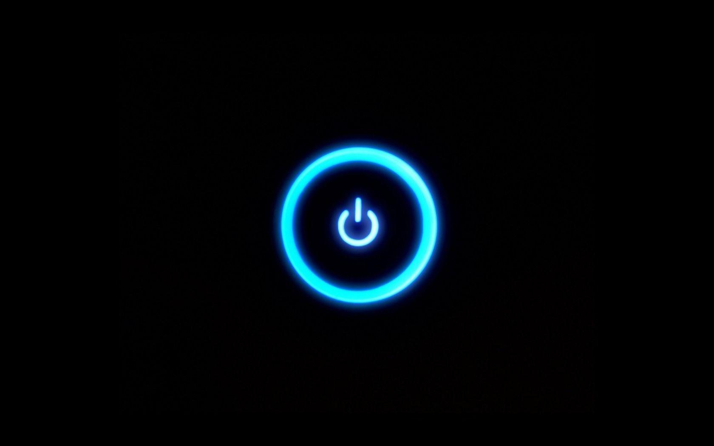
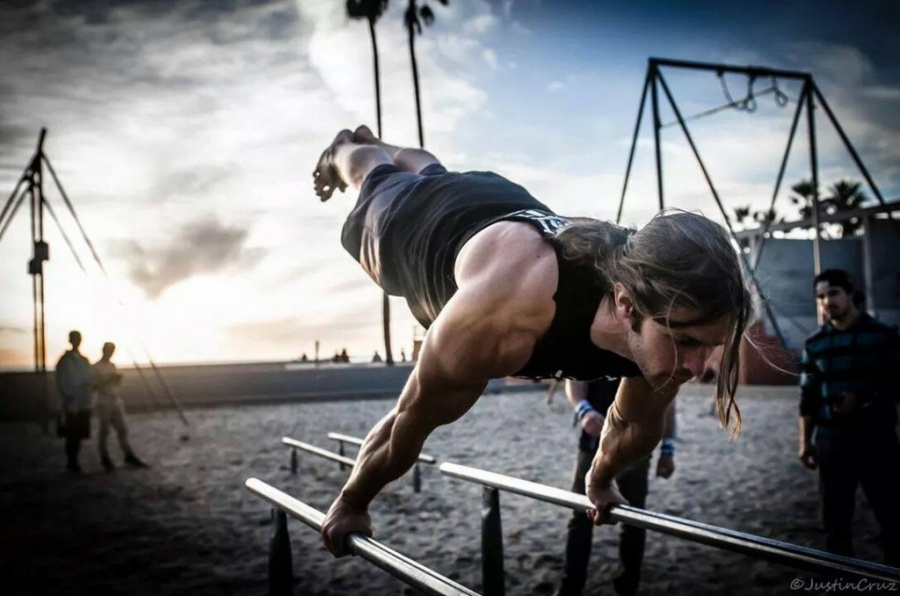
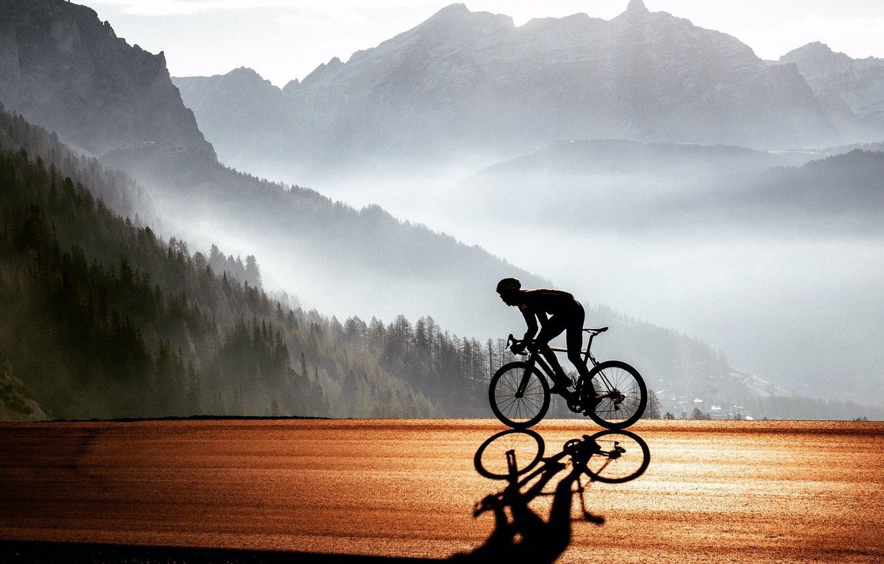

Futás
 A futást általános iskolában kedveltem meg, elkezdtem atlétikára is járni, melyet 6 évig műveltem, majd a gimnáziumban abbahagytam, viszont hobbiként még mindig űzöm, és minden évben részt veszek a SPAR futáson, ahol mindig egyre nagyobb távokat teljesítek.
A futást általános iskolában kedveltem meg, elkezdtem atlétikára is járni, melyet 6 évig műveltem, majd a gimnáziumban abbahagytam, viszont hobbiként még mindig űzöm, és minden évben részt veszek a SPAR futáson, ahol mindig egyre nagyobb távokat teljesítek.
A futást általános iskolában kedveltem meg, elkezdtem atlétikára is járni, melyet 6 évig műveltem, majd a gimnáziumban abbahagytam, viszont hobbiként még mindig űzöm, és minden évben részt veszek a SPAR futáson, ahol mindig egyre nagyobb távokat teljesítek.
Longboard

A longboardozást gimiben kezdtem el, korábban még deszkáztam, így hamar megtanultam ezt is kezelni, de inkább közlekedés mintsem trükközés céljából maradt a hobbijaim között.
Kajak

A kajakozást azért szeretem nagyon, mert mindig megnyugtat, emellett jól fejleszti az állóképességet. Először sportként próbáltam ki, majd később nagy hobbim maradt.
Síelés

Síelni minden évben járok a családommal, amióta az eszemet tudom, rettentően izgalmas és nyugodt sport is tud lenni, ha az ember éppen az erdőn keresztül a fák között akar cikázni, vagy csak csodálná a tájat, mind a kettőre van lehetősége.
Jégkorcsolya

A jégkorcsolyázás az egyik kedvenc sportom, minden télen a barátaimmal zárásig a korcsolyapályán vagyunk és a határainkat feszegetjük az újabb trükkök megtanulásában.
Fotózás

Fotózni még csak nemrég kezted el, viszont nagyon érdekesnek tartom és próbálok egyre jobb képeket készíteni, de még sokat kell tanuljak, hogy igazán jó fotókat készítsek.
Gaming

Számítógépes játékok közül a League of Legneds nevű játékkal szoktam játszani, tetszik benne, hogy egy csapatnak együtt kell tennie azért, hogy egy közös célt elérjenek, barátokkal különösen élvezetes ezt játszani.
Street workout

Barátokkal rendszeresen járunk egy szabadtéri kondiparkba, ahol egyes street workout elemeket igyekszünk elsajátítani.
Biciklizés

Biciklizni egészen korán megtanultam, talán az egyik legrégebbi hobbim. Minden évben legalább egyszer meg szoktam kerülni a Balatont és minden évben megyek az I bike Budapest nevű rendezvényre.